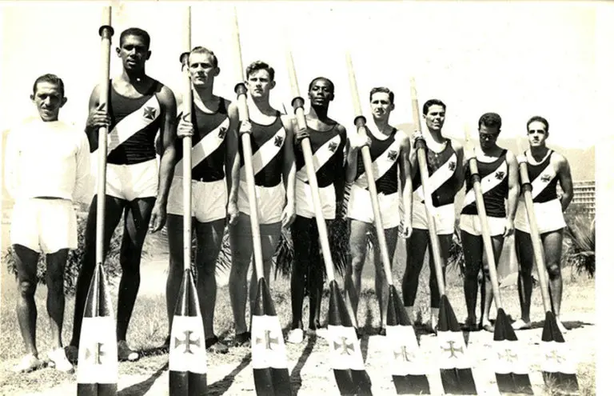
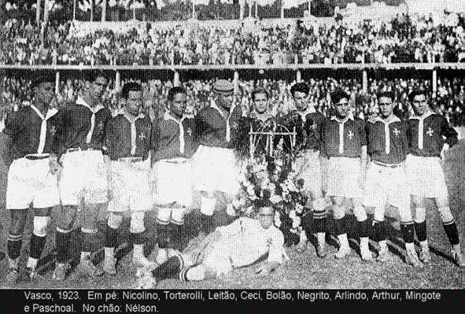
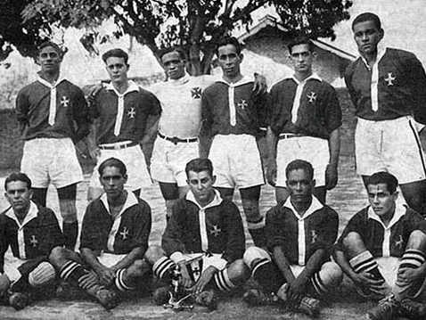

História do Vasco
O Vasco da Gama foi fundado como um clube de remo em 1898, por um grupo de 63 rapazes remadores, imigrantes portugueses. A reunião aconteceu no bairro da saúde. O nome escolhido foi Club de Regatas Vasco da Gama, em homenagem aos 400 anos a viagem do almirante à Índia. No dia 24 de novembro de 1905, o clube conquistou o primeiro Campeonato Carioca de Remo. Em sua história no Remo, o Vasco soma mais de 45 títulos estaduais.
Início no futebol e primeiros títulos
Em novembro de 1915, o clube de futebol Lusitânia uniu forças com o Vasco, assim dando origem ao departamento de futebol do Vasco da Gama, no início ouve uma oposição de alguns remadores. O Gigante da Colina estreou no dia 3 de maio de 1916, na terceira divisão. Assim se iniciaria uma grande história. Para ser jogador do Vasco, bastava saber jogar futebol, o clube ignorava o racismo a época e incorporava em seu plantel, jogadores e qualquer origem ética. Em 1922, o Vasco conquistou o primeiro título ao vencer a Série B da Primeira Divisão. Com a vitória, o time Cruzmaltino teve acesso garantido à primeira divisão da Liga Metropolitana de Desportos Terrestres. A campanha vascaína foi impecável, com 11 vitórias, 2 empates e uma derrota, sagrando-se Campeão Carioca de futebol no ano de 1923, no seu ano de estreia. Era a primeira vez que um time da periferia, incomodava os times elitistas a época.
Contra tudo e contra todos
O Vasco venceu o América e o Fluminense, conquistando o campeonato, em seu ano de estreia na primeira divisão, no dia 12 de agosto de 1923, deixando o Clube de Regatas Flamengo, na segunda colocação, o que acabou marcando significativamente a história do clube, do Rio de Janeiro e do Brasil, por ser o primeiro do Clube em uma campanha com integrantes afrodescendentes, pobres e operários a ser campeão. Após a tentativa fracassada de ver o Vasco da Gama fora da competição em 1923, os clubes da zona sul, Botafogo, Flamengo, Fluminense e alguns outros clubes encontraram a solução para se verem livres dos vascaínos no ano seguinte. Assim, se uniram, abandonaram a Liga Metropolitana de Desportos Terrestres (LMDT) e fundaram a Associação Metropolitana de Esportes Atléticos (AMEA), deixando de fora o Vasco, que só poderia se filiar à nova entidade caso dispensasse doze de seus atletas (todos negros) sob a acusação de que teriam “profissão duvidosa”. No ano de 1924, o presidente do Club de Regatas Vasco da Gama, José Augusto Prestes, enviou uma carta à AMEA, que veio a ser conhecida como a “resposta histórica”, recusando-se a se submeter à condição imposta e desistindo de filiar-se à AMEA. A carta entrou para a história como marco da luta contra o racismo no futebol.
Em 21 de abril de 1927, o Vasco da Gama inaugurava o Estádio de São Januário. Em 1929 além do Torneio Início, o Vasco ganha seu terceiro Campeonato Carioca de Futebol em 7 anos de elite.